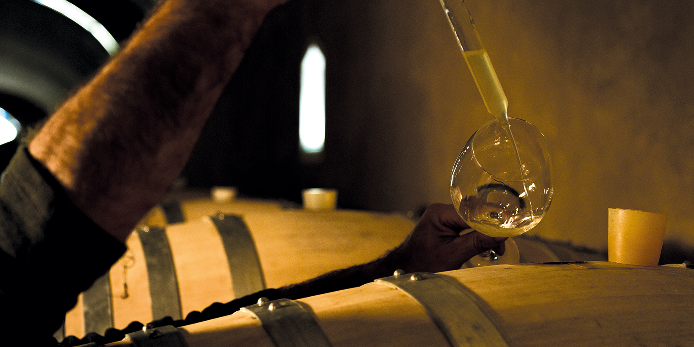
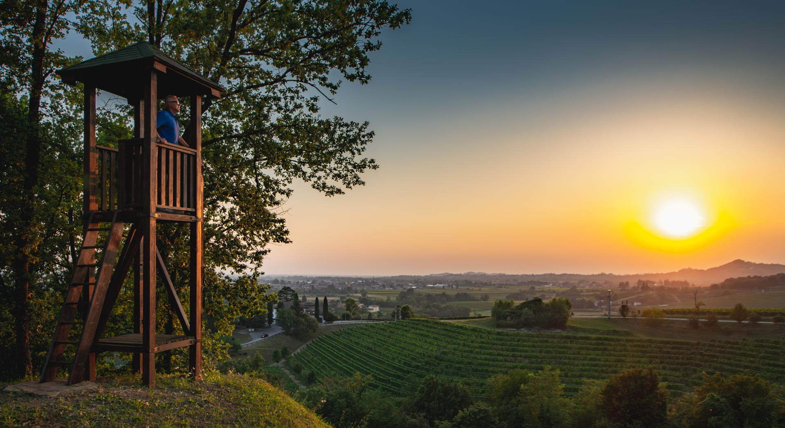

Jermann
Italy's Premier White Wine Producer




Featuring Italy's Premier White Wine Maker
An unforgettable journey through the prestigious wines of Jermann paired with authentic Friulian cuisine by Culinary Director Riccardo Longo.
Italy's Premier White Wine Producer